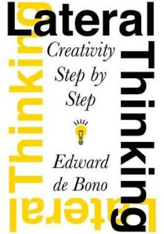

Lateral Thinking: Creativity Step by Step
Thursday July 16, 2020
After a reference in Peopleware, I found Edward de Bono's book on Lateral Thinking. I'd mostly heard about lateral thinking in the context of brain-teasers, and was pleased to find much more depth. This book could be a companion to How to Solve It.
"creativity is usually treated as something desirable which is to be brought about by vague exhortation." (page 7)
Lateral Thinking is almost a textbook for a class in creativity, complete with very concrete activities and teachers' guides. The topic is orthogonal to deductive reasoning; it's about finding more starting points rather than following one path.
This can be applied to problems with "correct" answers, but it also applies to many other things: writing, design, planning, deciding what other problems to work on. Nearly anything can benefit from "insight restructuring."
One technique for finding new ideas is to use random input: take a random word or random WikiPedia article, juxtapose it with your topic or problem, and see where you go. Using random input reminds me of noise in training neural networks.
Throughout, de Bono emphasizes suspending judgment, which is useful not just in brainstorming. One related practice is yes, and: build from ideas rather than shutting them down. A possible tactic is "extracting the functional principle of the idea" (page 163): even if the particulars seem unworkable, the underlying concept could be affirmed and expanded.
A few quotes:
"It is historical continuity that maintains most assumptions—not a repeated assessment of their validity." (page 91, italics in original)
"The purpose of thinking is not to be right but to be effective." (page 107)
"Unless one can pick out the dominant idea one is going to be dominated by it." (page 123)
"There is no harm in reinventing things that have already been invented. It is very good practice." (page 282)
